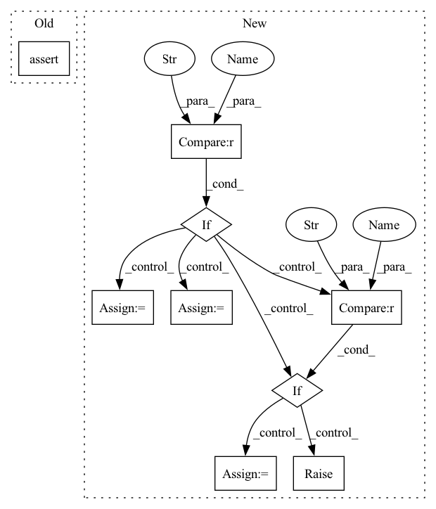

Pattern ID :727

Before Change
pq = pt.tensor(conf["partial_charges"], dtype=pt.float32)
assert pq.shape == z.shape
assert conf["dipole_moment"].attrs["units"] == "e*Å"
dp = pt.tensor(conf["dipole_moment"], dtype=pt.float32)
assert dp.shape == (3,)
After Change
mols = None
load_confs = None
if version == "1.0":
assert "name" in h5.attrs
mols = h5.items()
load_confs = self._load_confs_1_0
elif version == "2.0":
assert len(h5.keys()) == 1
mols = list(h5.values())[0].items()
load_confs = self._load_confs_2_0
else:
raise RuntimeError(f"Unsuported layout verions: {version}")
// Iterate over the molecules
for i_mol, (mol_id, mol) in tqdm(
In pattern: SUPERPATTERN
Frequency: 3
Non-data size: 9
Instances
Fragment ID: 3531748
Project Name: torchmd/torchmd-net
Commit Name: d23e6500f2cef1fa56d6c99ce5fdb983f1379bca
Time: 2022-10-28
Author: peastman@stanford.edu
File Name: torchmdnet/datasets/ace.py
M Class Name: Ace
N Class Name: Ace
M Method Name: sample_iter(2)
N Method Name: sample_iter(1)
M Parent Class: Dataset
N Parent Class: Dataset
M File Name: torchmdnet/datasets/ace.py
N File Name: torchmdnet/datasets/ace.py
M Start Line: 72
M End Line: 123
N Start Line: 144
N End Line: 206
'>
Before Change
self.out_format = out_format
assert 1 <= self.mfcc_order and self.mfcc_order < n_channel
assert is_in(self.out_format, ["y", "yE", "yc", "y,E", "y,c"])
self.fbank = MelFilterBankAnalysis(
n_channel, fft_length, sample_rate, out_format="y,E", **fbank_kwargs
After Change
assert 1 <= self.mfcc_order and self.mfcc_order < n_channel
if out_format == 0 or out_format == "y":
self.format_func = lambda y, c, E: y
elif out_format == 1 or out_format == "yE":
self.format_func = lambda y, c, E: torch.cat((y, E), dim=-1)
elif out_format == 2 or out_format == "yc":
self.format_func = lambda y, c, E: torch.cat((y, c), dim=-1)
elif out_format == 3 or out_format == "ycE":
self.format_func = lambda y, c, E: torch.cat((y, c, E), dim=-1)
else:
raise ValueError(f"out_format {out_format} is not supported")
self.fbank = MelFilterBankAnalysis(
n_channel, fft_length, sample_rate, out_format="y,E", **fbank_kwargs
'>
Fragment ID: 3531745
Project Name: sp-nitech/diffsptk
Commit Name: 33b30598598193c840ee1aac6522adba1b8ff04d
Time: 2022-04-12
Author: takenori.yoshimura24@gmail.com
File Name: diffsptk/core/mfcc.py
M Class Name: MelFrequencyCepstralCoefficientsAnalysis
N Class Name: MelFrequencyCepstralCoefficientsAnalysis
M Method Name: __init__(7)
N Method Name: __init__(7)
M Parent Class: nn.Module
N Parent Class: nn.Module
M File Name: diffsptk/core/mfcc.py
N File Name: diffsptk/core/mfcc.py
M Start Line: 76
M End Line: 79
N Start Line: 77
N End Line: 88
'>
Before Change
pos = pt.tensor(conf["positions"], dtype=pt.float32)
assert pos.shape == (z.shape[0], 3)
assert conf["formation_energy"].attrs["units"] == "eV"
y = pt.tensor(conf["formation_energy"][()], dtype=pt.float64)
assert y.shape == ()
After Change
h5 = h5py.File(path)
assert h5.attrs["layout"] == "Ace"
version = h5.attrs["layout_version"]
mols = None
load_confs = None
if version == "1.0":
assert "name" in h5.attrs
mols = h5.items()
load_confs = self._load_confs_1_0
elif version == "2.0":
assert len(h5.keys()) == 1
mols = list(h5.values())[0].items()
load_confs = self._load_confs_2_0
else:
raise RuntimeError(f"Unsuported layout verions: {version}")
// Iterate over the molecules
for i_mol, (mol_id, mol) in tqdm(
'>
Fragment ID: 3531744
Project Name: torchmd/torchmd-net
Commit Name: d23e6500f2cef1fa56d6c99ce5fdb983f1379bca
Time: 2022-10-28
Author: peastman@stanford.edu
File Name: torchmdnet/datasets/ace.py
M Class Name: Ace
N Class Name: Ace
M Method Name: sample_iter(2)
N Method Name: sample_iter(1)
M Parent Class: Dataset
N Parent Class: Dataset
M File Name: torchmdnet/datasets/ace.py
N File Name: torchmdnet/datasets/ace.py
M Start Line: 72
M End Line: 123
N Start Line: 144
N End Line: 206
'>
Before Change
val_dataloaders=val_dataloader,
)
test_outputs = trainer.test(net, dataloaders=test_dataloader)
assert len(test_outputs) > 0
// check loading
net = NHiTS.load_from_checkpoint(trainer.checkpoint_callback.best_model_path)
After Change
gpus,
dataloader,
):
if dataloader == "with_covariates":
dataloader = dataloaders_with_covariates
elif dataloader == "fixed_window_without_covariates":
dataloader = dataloaders_fixed_window_without_covariates
elif dataloader == "multi_target":
dataloader = dataloaders_multi_target
else:
raise ValueError(f"dataloader {dataloader} unknown")
_integration(dataloader, tmp_path=tmp_path, gpus=gpus)
'>
Fragment ID: 3531747
Project Name: jdb78/pytorch-forecasting
Commit Name: 4502e81dd8dbb8ec33fbde0efcdda8c4ad701b7f
Time: 2022-03-21
Author: beitner.jan@bcg.com
File Name: tests/test_models/test_nhits.py
M Class Name: AnonimousClass
N Class Name: AnonimousClass
M Method Name: test_integration(6)
N Method Name: test_integration(3)
M Parent Class:
N Parent Class:
M File Name: tests/test_models/test_nhits.py
N File Name: tests/test_models/test_nhits.py
M Start Line: 13
M End Line: 57
N Start Line: 64
N End Line: 78